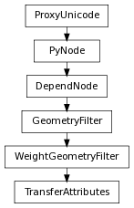

class counterpart of mel function transferAttributes
Samples the attributes of a source surface (first argument) and transfers them onto a target surface (second argument).
Controls whether color borders are preserved when transferring color data. If this is non-zero, any color borders will be mapped onto the nearest edge on the target geometry. 0 means any color borders will be smoothly blended onto the vertices of the target geometry.
Derived from mel command maya.cmds.transferAttributes
Controls how sampled UV data is flipped before being transferred to the target. 0 means no flipping; 1 means UV data is flipped in the U direction; 2 means UV data is flipped in the V direction; and 3 means it is flipped in both directions. In conjunction with mirroring, this allows the creation of symmetric UV mappings (e.g. the left hand side of the character on one side of the UV map, the right hand side on the other).
Derived from mel command maya.cmds.transferAttributes
When using topological component matching, selects between possible matches. If the meshes involved in the transfer operation have symmetries in their topologies, there may be more than one possible topological match. Maya scores the possible matches (by comparing the shapes of the meshes) and assigns them an index, starting at zero. Match zero, the default, is considered the best, but in the event that Maya chooses the wrong one, changing this value will allow the user to explore the other matches. Flag can have multiple arguments, passed either as a tuple or a list.
Derived from mel command maya.cmds.transferAttributes
Selects which space the attribute transfer is performed in. 0 is world space, 1 is model space, 4 is component-based, 5 is topology-based. The default is world space.
Derived from mel command maya.cmds.transferAttributes
Specifies which search method to use when correlating points. 0 is closest along normal, 3 is closest to point. The default is closest to point.
Derived from mel command maya.cmds.transferAttributes
Specifies an optional scale that should be applied to the x-axis of the target model before transferring data. A value of 1.0 (the default) means no scaling; a value of -1.0 would indicate mirroring along the x-axis.
Derived from mel command maya.cmds.transferAttributes
Specifies an optional scale that should be applied to the y-axis of the target model before transferring data. A value of 1.0 (the default) means no scaling; a value of -1.0 would indicate mirroring along the y-axis.
Derived from mel command maya.cmds.transferAttributes
Specifies an optional scale that should be applied to the z-axis of the target model before transferring data. A value of 1.0 (the default) means no scaling; a value of -1.0 would indicate mirroring along the z-axis.
Derived from mel command maya.cmds.transferAttributes
Controls color set transfer. 0 means no color sets are transferred, 1 means that a single color set (specified by sourceColorSet and targetColorSet) is transferred, and 2 means that all color sets are transferred.
Derived from mel command maya.cmds.transferAttributes
A non-zero value indicates vertex normals should be sampled and written into user normals on the target surface.
Derived from mel command maya.cmds.transferAttributes
A non-zero value indicates vertex position should be sampled, causing the target surface to wrapto the source surface(s).
Derived from mel command maya.cmds.transferAttributes
Controls UV set transfer. 0 means no UV sets are transferred, 1 means that a single UV set (specified by sourceUVSet and targetUVSet) is transferred, and 2 means that all UV sets are transferred.
Derived from mel command maya.cmds.transferAttributes